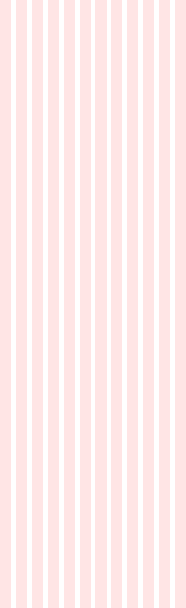
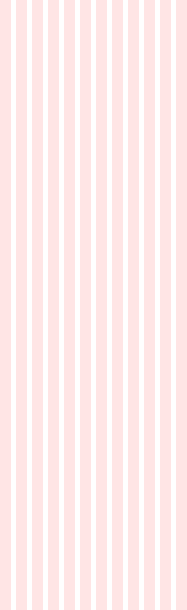

Ежедневно в России появляется более 5 000 новых сайтов.
И только единицы из них становятся популярными и приносят ощутимую прибыль. В чем секрет? В чем формула успеха? Узнайте на предстоящем двухдневном
БЕСПЛАТНОМ
И только единицы из них становятся популярными и приносят ощутимую прибыль. В чем секрет? В чем формула успеха? Узнайте на предстоящем двухдневном
интенсиве!
это просто!
WordPress интенсив
узнать больше об интенсиве

Куда сложнее сделать это правильно!
Создать свой сайт на WordPress